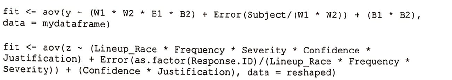

Perceived Reliability of Eyewitness Statements
Impact of frequency and severity of a crime on perception of eyewitness confidence statements.
Summary
In contrast to the eyewitness testimonies at the time of trial, recent empirical works suggest that eyewitnesses' confidence statements at the time of initial identification may be a highly reliable indicator of accuracy. During the lineup, eyewitnesses are told to state in words how confident they are about the identification. For this study, a convenient sample of individuals online was asked to interpret how confident eyewitnesses are to observe the impacts of varying factors on the perception of eyewitness confidence.
The study shows that the frequency and severity, as expected, holds a significant impact on the perception of how confident the eyewitness was in the lineup. Somewhat interestingly, the race of lineup did not play a statistically significant role according to the dataset. The race, age, and state/region of the evaluator remain to be explored as a part of future analysis.
Introduction
Eyewitness memory is generally believed to be unreliable due to the malleability of human memory. People can be led to remember events differently from the actual occurrence due to a multitude of factors. High-confidence eyewitness misidentification played a role in over 72 percent of the now more than three hundred DNA exonerations of wrongfully convicted men and women. Thus, many researchers agree that confidence statements made by eyewitnesses in a court of law should be heard under much scrutiny if not disregarded completely. However, a significant portion of recent empirical work suggests that confidence may be a highly reliable indicator of accuracy at the time of initial identification (from a lineup).
For this study, a convenient sample of individuals was asked to rate their perceived eyewitness confidence according to the eyewitness statements. Examining the factors that influence the interpretation of this confidence statement is critical as it will assist the understanding of how jurors and officers interpret these statements and ultimately lead to better techniques in obtaining and using eyewitness testimony through the understanding of factors that bias the interpretations.
A dataset spanning over 660 individual confidence statement interpretations was collected. Each entry consists of variables included Response ID, Justification [Confidence Only, Featural, or Unobservable], Confidence [High or Medium], variables regarding the combination of Race of Lineup, Severity of crime [High or Low], and Frequency of crime [High or Low], as well as evaluators' Gender, Age, Race, and State/Region.
The primary object of this study is to determine the relationship between frequency and severity of a crime on the perception that individuals have over eyewitness confidence statements. The secondary objective, similarly, is to determine the possible effects of the race of the accused and the gender of the evaluator on the perception of eyewitness confidence statements. For this study, the age, race, and state/region of the evaluator will not be used.
Approaches and Results
To first address the objectives of this study, data were fitted according to the equation below using the variables.
Summary of the model effects are as follows:
Reference A and B stands to prove that Frequency (Reference A) and Severity (Reference B) has a significant effect on the perception of eyewitness confidence statements. This is further supported by the interaction plots found below.
Reference C and D visually indicate the disparity between high and low frequency and high and low severity according to confidence and justification type. Plots indicate that confidence statements for high severity crimes are rated with higher confidence while confidence statements for low frequency crimes are rated with higher confidence. This trend shown above persists even when the evaluator's gender is factored in.
Compared to the disparity shown in Reference C and D, however, lineup race (Black or White) has a lesser effect, if at all.
Reference G and H show that while racially white lineup tends to be rated with a higher confidence rate (perhaps due to the supposed familiarity of racially white faces), it is significantly less compared to the difference observed in Reference C and D. Furthermore, the summary of the model on effects of lineup race (Reference I) found below states that the relationship between the race of the lineup and the perceived confidence has no statistical significance.
Finally, in Reference J, summation of the effects of Justification [Confidence Only, Featural, Unobservable] and Confidence [High or Medium] are shown through a boxplot of the average of the 8 scores from each person.
Conclusion
It is crucial to examine the factors that influence the interpretation of eyewitness confidence statements. Not only does understanding bias provide better control over possible errors, but it will also ultimately lead to better techniques in evaluating eyewitness testimonies. The primary purpose of this study was to determine the relationship between severity of crime and frequency of crime on the perception of eyewitness confidence. The results of this study show that there is a statistically significant relationship between the severity/frequency of crime and the human perception of eyewitness confidence. Crimes with high severity are evaluated with a higher confidence rate while crimes with high frequency are evaluated with a lower confidence rate. This pattern continues to hold when the evaluators' genders are factored in.
While the results of this study are promising, there are also minor concerns and suggestions for possible future studies to improve the analysis. First, as the sampling depended on convenient sampling performed online, there is no guarantee that all observations are independent or that there is an unforeseen bias present in the evaluators. Similarly, a more thorough collection of evaluators' backgrounds may provide more insight into other potential biases. Finally, further study on the relationship between perceived confidence and actual conviction could provide greater insight into the subject matter.